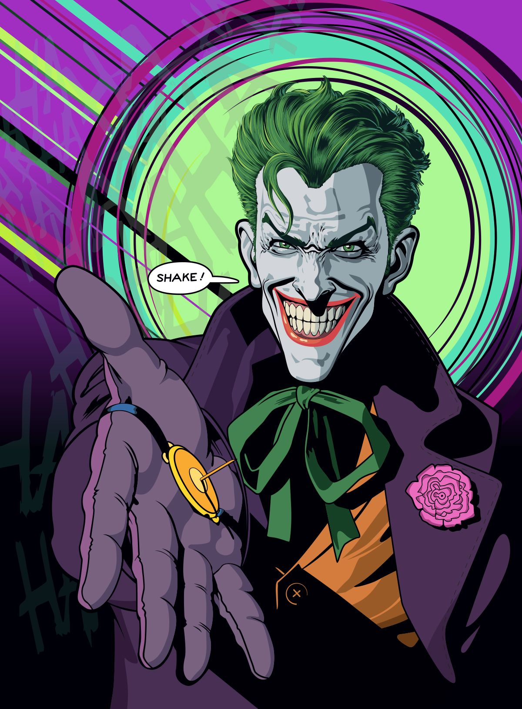
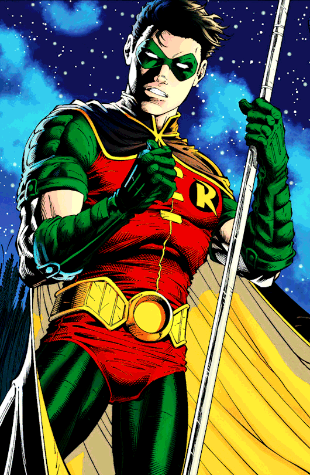
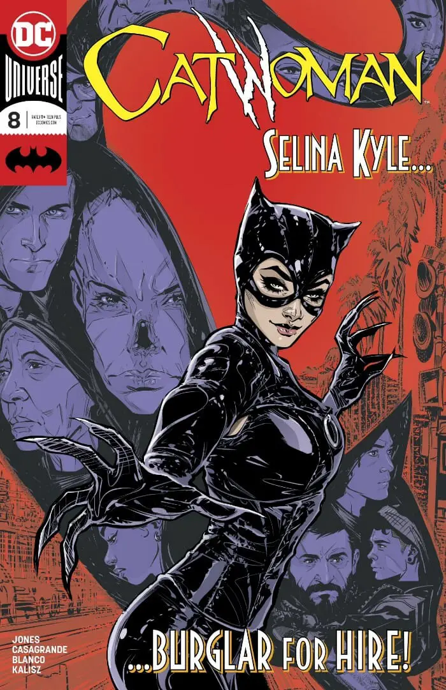
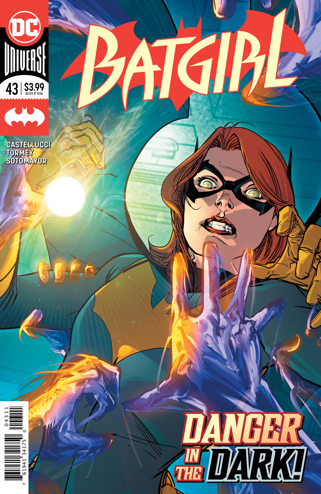

Batman
Illustrated by: Neal Adams

Batman is Gotham’s dark protector, a vigilante who fights crime using his intelligence, combat skills, and high-tech gadgets. Unlike other superheroes, he has no superpowers but relies on his intense training, detective skills, and fearsome presence. He is known for his moral code, refusing to kill even his worst enemies, which often leads to internal struggles. As the leader of the Bat-Family, he mentors allies like Robin and Batgirl, shaping them into crimefighters. His unwavering commitment to justice has earned him the respect of Gotham’s citizens and law enforcement. Despite his heroics, he is haunted by the tragedy of his parents’ murder, which fuels his relentless mission. Batman’s presence alone strikes fear into the hearts of criminals, making him one of the most formidable figures in Gotham.
Bruce Wayne
Illustrated by: Dan Mora

Bruce Wayne, Batman’s alter ego, is a billionaire philanthropist and the head of Wayne Enterprises. By day, he plays the role of a carefree playboy, masking his true identity as Gotham’s greatest detective. His wealth funds his crime-fighting efforts, allowing him to develop advanced technology and maintain the Batcave. Despite his public persona, Bruce is deeply affected by the loss of his parents, which drives his double life. He struggles with personal relationships, often pushing people away to protect them from his dangerous mission. His intelligence and business acumen make him a powerful figure, both in Gotham’s high society and on the battlefield against crime. Bruce Wayne is not just a mask for Batman but a crucial part of his identity, allowing him to operate within both worlds.
The Joker
Illustrated by: Brian Bolland
The Joker is Batman’s greatest nemesis. His chaotic nature and love for anarchy have made him one of the most dangerous villains in Gotham. He is a master manipulator and thrives on creating chaos and terror. The Joker’s twisted sense of humor and unpredictable nature make him a true threat to Gotham, as he constantly challenges Batman’s resolve and moral code. Unlike most villains, the Joker doesn’t have any personal gain in his actions—he simply enjoys causing suffering for the sake of amusement. His backstory remains largely ambiguous, adding to his mystique and fearsome reputation.
Robin
Illustrated by: Jerry Robinson
Robin is Batman's loyal sidekick and partner in fighting crime. There have been several individuals who have taken up the mantle of Robin, including Dick Grayson, Jason Todd, Tim Drake, and Damian Wayne. The role of Robin provides Batman with someone who shares his mission and helps to alleviate his sense of loneliness. Robin is often seen as the more optimistic member of the Bat-family, bringing light to Batman’s darker world. Despite his youth, Robin is a skilled fighter and detective, trained by the Dark Knight himself. He plays a crucial role in supporting Batman’s efforts to protect Gotham City.
Catwoman
Illustrated by: Adam Hughes
Selina Kyle, known as Catwoman, is both a foe and ally to Batman. A skilled burglar and acrobat, Catwoman is often caught between her criminal instincts and her attraction to Batman’s sense of justice. While she may engage in illegal activities, her motivations are complex, and she is often seen as an anti-heroine rather than a pure villain. Her relationship with Batman is tumultuous, as their shared feelings for each other make her role in Gotham's underworld even more complicated. Despite her morally gray nature, Catwoman is one of Batman’s most capable allies when the need arises.
Batgirl
Illustrated by: Cameron Stewart
Batgirl, also known as Barbara Gordon, is one of the most prominent members of the Bat-Family. She is the daughter of Gotham's police commissioner, James Gordon, and has dedicated her life to fighting crime in Gotham. With her acrobatic skills, intelligence, and determination, Batgirl has become an important crimefighter in her own right. After a tragic encounter with the Joker, which left her paralyzed from the waist down, she continued her work as Oracle, providing crucial support and intelligence to her fellow heroes. Later, she regained the ability to walk and returned to her Batgirl identity. Batgirl is a symbol of resilience, courage, and independence, constantly proving that she is an indispensable part of Gotham's defense against evil.